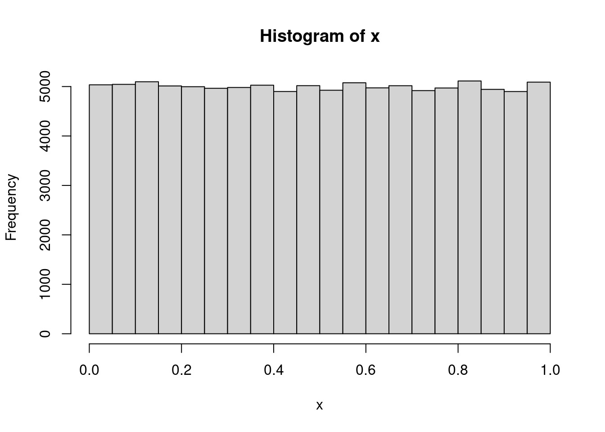
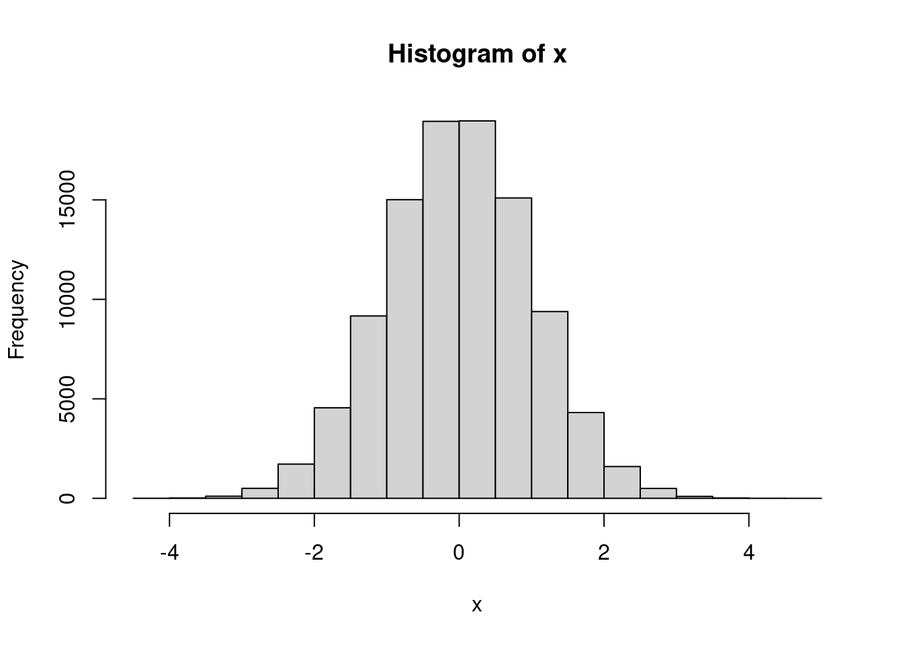
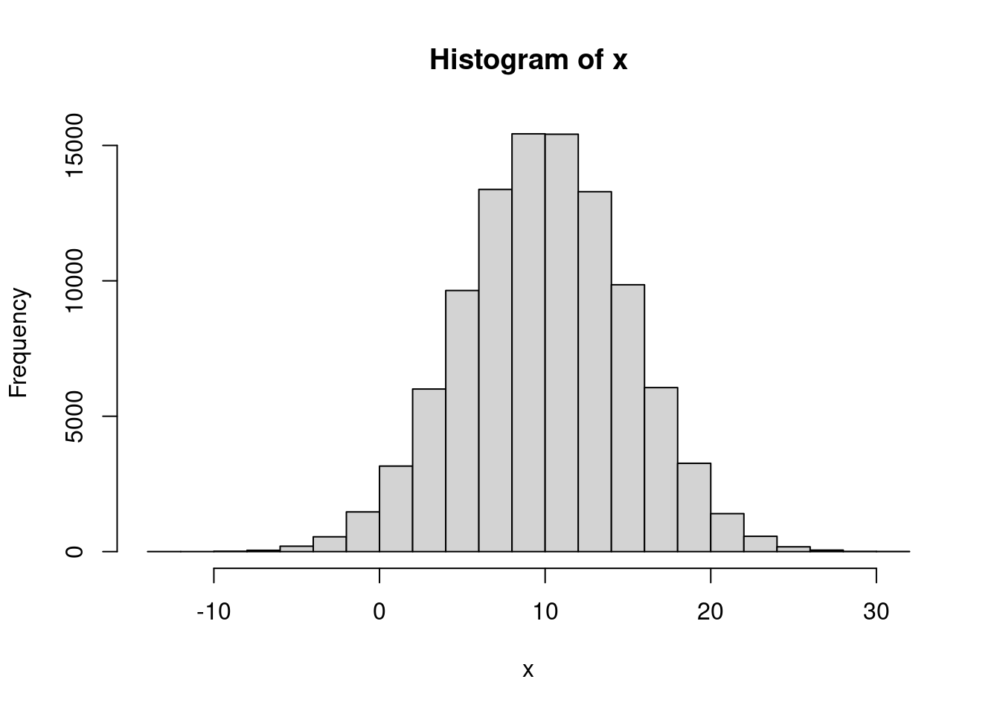
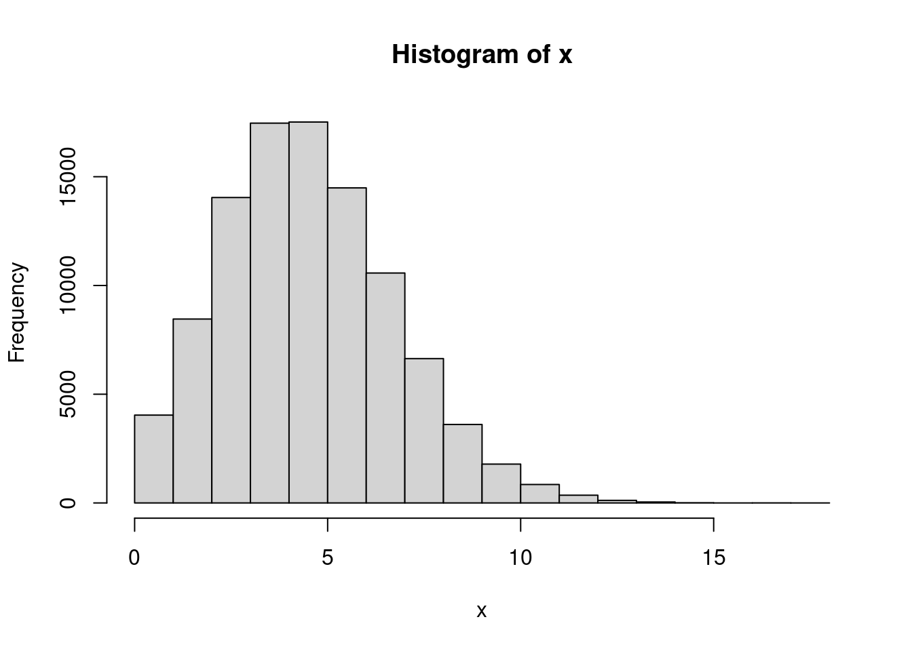
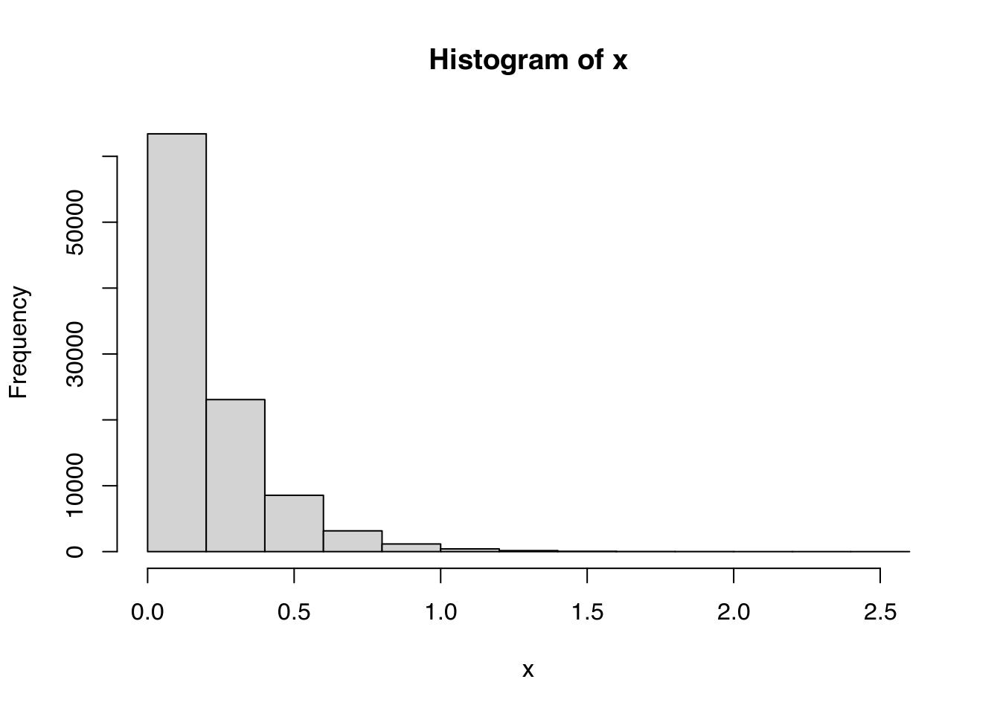

4.4 A gentle Quick n’ Dirty Introduction to R
Some common tasks in R
Getting help (and reading the manual) is THE MOST IMPORTANT thing you should know about. For example, if you want to read the manual (help file) of the
read.csvfunction, you can type either of these:r ?read.csv ?"read.csv" help(read.csv) help("read.csv")If you are not fully aware of what is the name of the function, you can always use the fuzzy searchr help.search("linear regression") ??"linear regression"In R you can create new objects by either using the assign operator (
<-) or the equal sign=, for example, the following 2 are equivalent:r a <- 1 a = 1Historically the assign operator is the most commonly used.R has several type of objects, the most basic structures in R are
vectors,matrix,list,data.frame. Here is an example creating several of these (each line is enclosed with parenthesis so that R prints the resulting element):## [1] 1 2 3 4 5 6 7 8 9## [1] 1 2 3 4 5 6 7 8 9## [1] "I" "like" "netdiffuseR"## [,1] [,2] [,3] ## [1,] 1 4 7 ## [2,] 2 5 8 ## [3,] 3 6 9## [,1] [,2] [,3] ## [1,] "a" "d" "g" ## [2,] "b" "e" "h" ## [3,] "c" "f" "i"## [,1] [,2] ## [1,] 1 11 ## [2,] 2 12 ## [3,] 3 13 ## [4,] 4 14## [,1] [,2] [,3] [,4] ## [1,] 1 2 3 4 ## [2,] 11 12 13 14## [,1] [,2] [,3] ## [1,] "a" "d" "g" ## [2,] "b" "e" "h" ## [3,] "c" "f" "i"## [[1]] ## [1] 1 2 3 4 5 6 7 8 9 ## ## [[2]] ## [,1] [,2] [,3] ## [1,] 1 4 7 ## [2,] 2 5 8 ## [3,] 3 6 9## $my_vec ## [1] 1 2 3 4 5 6 7 8 9 ## ## $my_mat ## [,1] [,2] [,3] ## [1,] 1 4 7 ## [2,] 2 5 8 ## [3,] 3 6 9# Data frames can have multiple types of elements, it is a collection of lists (a_data_frame <- data.frame(x = 1:10, y = letters[1:10]))## x y ## 1 1 a ## 2 2 b ## 3 3 c ## 4 4 d ## 5 5 e ## 6 6 f ## 7 7 g ## 8 8 h ## 9 9 i ## 10 10 jDepending on the type of object, we can access to its components using indexing:
## [1] 1 2 3## [1] "netdiffuseR"## [,1] [,2] ## [1,] 1 4 ## [2,] 2 5## [1] 7 8 9## [1] 3 6 9## [1] "a" "b" "c" "d" "e" "f"## [1] 1 2 3 4 5 6 7 8 9## [1] 1 2 3 4 5 6 7 8 9## [1] 1 2 3 4 5 6 7 8 9## [1] 1 2 3 4 5 6 7 8 9 10## [1] 1 2 3 4 5 6 7 8 9 10## [1] 1 2 3 4 5 6 7 8 9 10## [1] 1 2 3 4 5 6 7 8 9 10Control-flow statements
## [1] "I'm step 1 / 10" ## [1] "I'm step 2 / 10" ## [1] "I'm step 3 / 10" ## [1] "I'm step 4 / 10" ## [1] "I'm step 5 / 10" ## [1] "I'm step 6 / 10" ## [1] "I'm step 7 / 10" ## [1] "I'm step 8 / 10" ## [1] "I'm step 9 / 10" ## [1] "I'm step 10 / 10"# A nice ifelse for (i in 1:10) { if (i %% 2) # Modulus operand print(paste("I'm step", i, "/", 10, "(and I'm odd)")) else print(paste("I'm step", i, "/", 10, "(and I'm even)")) }## [1] "I'm step 1 / 10 (and I'm odd)" ## [1] "I'm step 2 / 10 (and I'm even)" ## [1] "I'm step 3 / 10 (and I'm odd)" ## [1] "I'm step 4 / 10 (and I'm even)" ## [1] "I'm step 5 / 10 (and I'm odd)" ## [1] "I'm step 6 / 10 (and I'm even)" ## [1] "I'm step 7 / 10 (and I'm odd)" ## [1] "I'm step 8 / 10 (and I'm even)" ## [1] "I'm step 9 / 10 (and I'm odd)" ## [1] "I'm step 10 / 10 (and I'm even)"## [1] "I'm step 10 / 10" ## [1] "I'm step 9 / 10" ## [1] "I'm step 8 / 10" ## [1] "I'm step 7 / 10" ## [1] "I'm step 6 / 10" ## [1] "I'm step 5 / 10" ## [1] "I'm step 4 / 10" ## [1] "I'm step 3 / 10" ## [1] "I'm step 2 / 10" ## [1] "I'm step 1 / 10"R has a very nice set of pseudo-random number generation functions. In general, distribution functions have the following name structure:
- Random Number Generation:
r[name-of-the-distribution], e.g.rnormfor normal,runiffor uniform. - Density function:
d[name-of-the-distribution], e.g.dnormfor normal,duniffor uniform. - Cumulative Distribution Function (CDF):
p[name-of-the-distribution], e.g.pnormfor normal,puniffor uniform. - Inverse (quantile) function:
q[name-of-the-distribution], e.g.qnormfor the normal,quniffor the uniform.
Here are some examples:





More distributions are available at
??Distributions.- Random Number Generation:
For a nice intro to R, take a look at “The Art of R Programming” by Norman Matloff. For more advanced users, take a look at “Advanced R” by Hadley Wickham.
For this book, we need the following
R Core Team (2017b)
Install R from CRAN: https://www.r-project.org/
(optional) Install Rstudio: https://rstudio.org
While I find RStudio extremely useful, it is not necessary to use it with R.